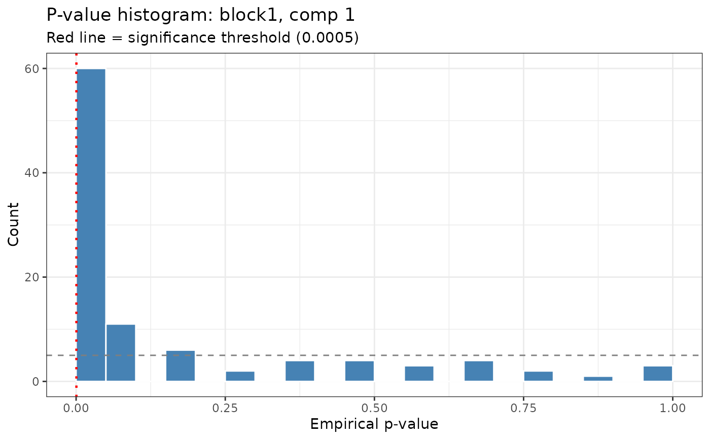
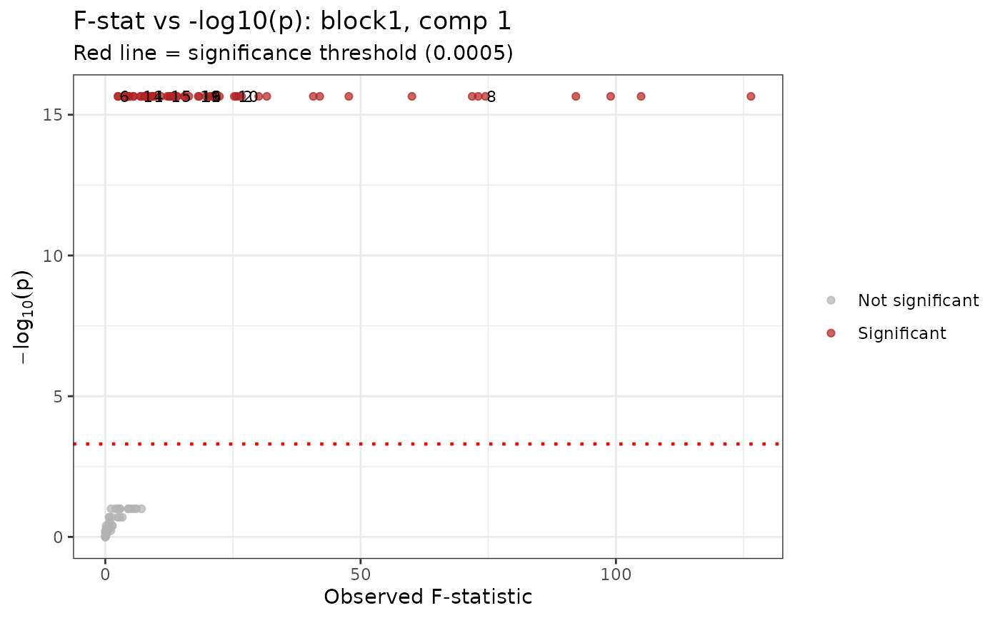
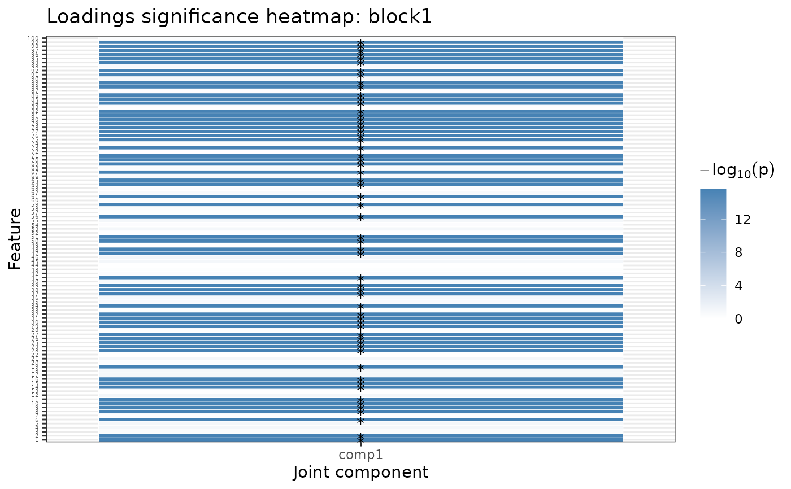

Produces diagnostic plots for a jackstraw_rajive object.
Three plot types are supported (selected via type):
Usage
plot_jackstraw(
jackstraw_result,
type = c("pvalue_hist", "scatter", "loadings_significance"),
block = 1L,
component = 1L,
label_top = 10L,
...
)Arguments
- jackstraw_result
An object of class
"jackstraw_rajive".- type
Character string; one of
"pvalue_hist","scatter", or"loadings_significance".- block
Positive integer; which block to plot. Default
1.- component
Positive integer; which joint component to plot (used for
"pvalue_hist"and"scatter"). Default1.- label_top
Non-negative integer; for
"scatter", the number of top-significant features to label. Set to0to suppress labels. Default10.- ...
Ignored (reserved for future use).
Details
"pvalue_hist"Histogram of empirical p-values for a single block / component. A horizontal reference line is drawn at the effective significance threshold (Bonferroni-adjusted if applicable). Enrichment of small p-values indicates real signal.
"scatter"Scatter plot of observed F-statistic (x-axis) versus \(-\log_{10}(p\text{-value})\) (y-axis) for a single block / component. Significant features are coloured red; non-significant features are grey. Features are optionally labelled when column names are present and
label_top > 0."loadings_significance"Heatmap of \(-\log_{10}(p\text{-value})\) across all joint components for a single block. Significant cells are marked with an asterisk.
References
Yang X, Hoadley KA, Hannig J, Marron JS (2021). Statistical inference for data integration. arXiv:2109.12272.
Examples
# \donttest{
set.seed(42)
n <- 50
pks <- c(100, 80)
Y <- ajive.data.sim(K = 2, rankJ = 2, rankA = c(5, 4), n = n,
pks = pks, dist.type = 1)
data.ajive <- Y$sim_data
initial_signal_ranks <- c(5, 4)
ajive_result <- Rajive(data.ajive, initial_signal_ranks)
js <- jackstraw_rajive(ajive_result, data.ajive, alpha = 0.05, n_null = 10)
plot_jackstraw(js, type = "pvalue_hist", block = 1, component = 1)

plot_jackstraw(js, type = "scatter", block = 1, component = 1)

plot_jackstraw(js, type = "loadings_significance", block = 1)

# }